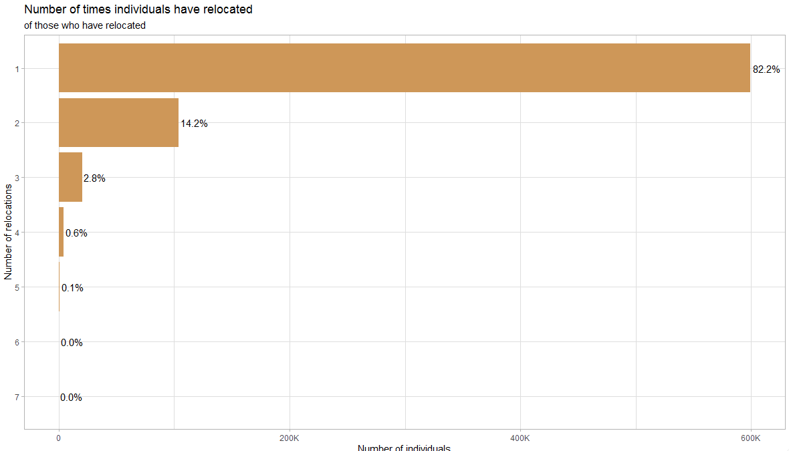
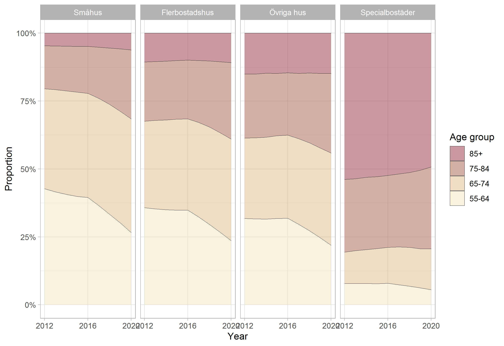

5 Exploring data - Housing
Study period 2012-2020 when data is made available from SCB from the Real estate and Apartment registers. Data is taken from three SCB data sources: lev_lisa, lev_housing, and lev_population. The following steps are taken to arrive at a complete data set:
The unique identifier lopnr in the lev_population data set is filtered with the following criteria: index_p ==1 & ater_pnr == 0 & sen_pnr == 1.
Next this set of unique identifiers are matched to the full lev_lisa data set, resulting in lisa data that contains only the unique identifiers from the first step.
690 duplicate lopnr-year observations are identified and removed from the data set. Further inspection indicated this small number is a result of messy data, showing no trend or further information.
As data from lev_lisa ends in 2019 and data from the lev_housing data set ends in 2020, time invariant variables(year of birth, sex, education, etc.) from unique individuals in 2019 are replicated for 2020 to facilitate the appropriate matching to the unique identifiers in the 2020 Housing data.
Lastly, the data is joined by the unique lopnr-year combination with the lev_housing data.
5.1 Descriptive statistics

Here we see that the vast majority of individuals who have relocated in the sample period have done so only once(82%), with a small proportion moving 3 times or more (about 3%)

On the relocation level, we see that about 70% of revocations have been between some combination of Multi-dwelling and One-dwelling housing types, with a lower proportion of revocations into Special housing

Here, at the housing level, we can see that those in Special housing are mostly in the 85+ category.
5.2 Specific data considerations
5.2.1 Translating types of housing and tenure
(From Susanne):
Hustyper och upplåtelseformer
svenska/engelska
Med bostadslägenhet avses en lägenhet avsedd att helt eller till en inte oväsentlig del användas som bostad, oavsett i vilken hustyp den ligger. Även bostäder i småhus definieras således som lägenheter. Upplåtelseform Lägenheternas upplåtelseform utgår från ägarförhållandet och inte hur de boende förfogar över lägenheterna
Hustyp/Type of housing
- Småhus avser friliggande en- och tvåbostadshus samt par-, rad- och kedjehus (exklusive fritidshus).
- One-or-two-dwelling buildings means detached buildings as well as semi-detached, row and linked buildings (excluding buildings for seasonal and secondary use).
- Flerbostadshus avser bostadsbyggnader innehållande tre eller flera lägenheter inklusive loftgångshus.
- Multi-dwelling buildings means buildings with three or more apartments including balcony access housing.
- Övriga hus avser byggnader som inte huvudsakligen är avsedda för bostadsändamål men ändå innehåller bostadslägenheter, t.ex. byggnader avsedda för verksamhet/samhälls¬funktion.
- Other housing means buildings that are not mainly intended for residential purposes but still contains ordinary dwellings, e.g. buildings used for business/public function.
- Specialbostäder avser bostäder för äldre/funktionshindrade, studentbostäder, etc.
- Special housing means dwellings for older people, persons with disabilities, students, etc.
Upplåtelseform
- Hyresrätt: Flerbostadshus och övriga hus med hyresrätt avser lägenheter som inte är ägarlägenheter och som ägs av andra än bostadsrättsföreningar/bostadsföreningar. Småhus med hyresrätt avser lägenheter som ägs av andra ägare än fysiska personer, dödsbon, bostadsrättsföreningar/bostadsföreningar.
- Rented dwellings: Multi-dwelling and other buildings with dwellings that are owned by other than housing cooperatives. One- or two-dwelling buildings with rented dwellings means apartments owned by other than private persons, estates of deceased persons or housing cooperatives.
- Bostadsrätt: Bostadsrätt avser lägenheter som ägs av bostadsrättsföreningar/ bostadsföreningar (äldre form som existerade innan 1930).
- Tenant-owned dwelling: One-, two- or multi-dwellings owned by housing cooperatives.
- Äganderätt: Småhus med äganderätt avser lägenheter som ägs av fysiska personer eller dödsbon. Flerbostadshus och övriga hus med äganderätt avser ägarlägenheter.
- Owner-occupied dwelling: One- or two-dwelling buildings with apartments owned by private persons or estates of deceased persons. Multi-dwelling and other buildings with owner-occupied dwelling means condominiums.
Källa SCB, bearbetat av Susanne, 2022-09-08
Fotnot SCB: Både nyproducerade och existerande lägenheter, vilka tidigare utgjort bortfall i registret, registreras löpande. Därutöver sker rättningar och kompletteringar av tidigare felaktiga uppgifter samt till följd av att det befintliga beståndet förändras, t.ex. genom ombyggnad och rivning. Största delen av de lägenheter som redovisas som specialbostäder och övriga hus från 2013 och framåt ingick tidigare i kategorin flerbostadshus.
5.2.2 Identifying partners
There are some discrepancies in the data when finding consistent partner matches to unique individuals across the multiple data sets.
We can find partner data in two of the datasets: partners_rtb and samh. In the partners_rtb dataset, we have three variables for every lopnr-year observation:
- Lopnrsamh – (no definition given in the excel sheet) 1987-1997.
- Lopnrsambo – “sambo’s personummer” from 1998.
- Lopnrmakpart – “make/maka/partners personummer” ( I believe this is technically married) from 1998.
From the samh dataset, we have one variable: * LopNrSamh – (no definition given in the accompanying excel sheet).
Since no particular partner variable was consistent over time, a new varaible is created, “partner”, that takes the value of whichever variable has valid data (of one of the above variables) for that lopnr/year. If there are two values, the priority is for the lopnrsamh from the partners_rtb dataset (it seems to have the best coverage).
A screenshot for an particular individual with multiple partners over time to illustrate.

5.2.4 Identifying relocations
To identify when an individual has relocated in the data the following considerations are taken into account.
- The housing variables, fast_lopnr and lghlopnr appear to uniquely identify the housing location of a particular individual. Over time, a change in either variable should indicate that an individual as relocated (highlighted in orange below). This change appears to be the best indicator of whether an individual has relocated or not.

The coordinate variables, xkoord and ykoord appear to be occasionally inconsistent, giving different values for the same fast_lopnr and lghlopnr identifier in some of the data. This may be the result of data errors or possibly a GPS margin of error when measuring housing location (Highlighted yellow).
The variable n_housing counts how many unique fast_lopnr’s are associated with each lopnr. For example, individual RED, has resided in three locations, Individual BLUE has resided in two locations, and Individual 40 has resided in one location during the sample period.
The vairalbes change_housing and change_tenure take the before and after values of housing and tenure (respectively) and return the before and after categories when a change (relocation) has occurred.
Byggtyp appears to follow the patterns of fast_lopnr and lghlopnr, but contains some missing data. The missing Byggtyp value seems to be associated with the values “Övriga hus” and “Specialböstader” in housing.